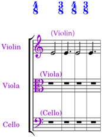
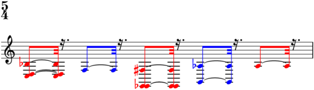
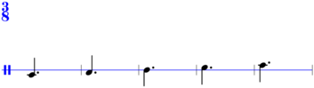
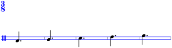
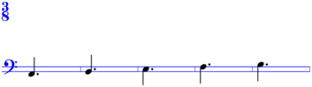
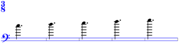
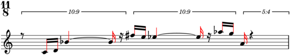

LibraryNS¶
-
class
baca.LibraryNS.LibraryNS¶ Library N - S.
Special methods
-
(AbjadObject).__format__(format_specification='')¶ Formats Abjad object.
Set format_specification to ‘’ or ‘storage’. Interprets ‘’ equal to ‘storage’.
Returns string.
-
(AbjadObject).__repr__()¶ Gets interpreter representation of Abjad object.
Returns string.
Class & static methods
-
static
natural_clusters(widths, selector='baca.plts()', start_pitch=None)¶ Makes natural clusters with
widthsandstart_pitch.Return type: ClusterCommand
-
static
nest(time_treatments=None)¶ Nests music.
>>> music_maker = baca.MusicMaker() >>> contribution = music_maker( ... 'Voice 1', ... [[0, 2, 10], [18, 16, 15, 20, 19], [9]], ... baca.nest('+4/16'), ... baca.rests_around([2], [4]), ... baca.tuplet_bracket_staff_padding(5), ... counts=[1, 1, 5, -1], ... time_treatments=[-1], ... ) >>> lilypond_file = music_maker.show(contribution) >>> abjad.show(lilypond_file, strict=89)
Return type: NestingCommand
-
static
no_ledgers(selector='baca.leaves()')¶ Overrides note-head no-ledgers.
Return type: OverrideCommand
-
static
note_column_shift(n, selector='baca.leaf(0)')¶ Overrides note column force hshift.
Return type: OverrideCommand
-
static
note_head_color(color, selector='baca.pleaves()')¶ Overrides note-head color.
Return type: OverrideCommand
-
static
note_head_stencil_false(selector='baca.leaf(0)')¶ Overrides note-head stencil.
Return type: OverrideCommand
-
static
note_head_style_cross(selector='baca.tleaves()')¶ Overrides note-head style.
Overrides note-head style on all pitched leaves:
>>> music_maker = baca.MusicMaker() >>> contribution = music_maker( ... 'Voice 1', ... [[0, 2, 10], [18, 16, 15, 20, 19], [9]], ... baca.note_head_style_cross(), ... baca.rests_around([2], [4]), ... baca.tuplet_bracket_staff_padding(5), ... counts=[1, 1, 5, -1], ... time_treatments=[-1], ... ) >>> lilypond_file = music_maker.show(contribution) >>> abjad.show(lilypond_file, strict=89)
Overrides note-head style on pitched leaves in tuplet 1:
>>> music_maker = baca.MusicMaker() >>> contribution = music_maker( ... 'Voice 1', ... [[0, 2, 10], [18, 16, 15, 20, 19], [9]], ... baca.note_head_style_cross(baca.tuplet(1)), ... baca.rests_around([2], [4]), ... baca.tuplet_bracket_staff_padding(5), ... counts=[1, 1, 5, -1], ... time_treatments=[-1], ... ) >>> lilypond_file = music_maker.show(contribution) >>> abjad.show(lilypond_file, strict=89)
Return type: OverrideCommand
-
static
note_head_style_harmonic(selector='baca.tleaves()')¶ Overrides note-head style for
selectoroutput.Overrides note-head style on all PLTs:
>>> music_maker = baca.MusicMaker() >>> contribution = music_maker( ... 'Voice 1', ... [[0, 2, 10], [18, 16, 15, 20, 19], [9]], ... baca.note_head_style_harmonic(), ... baca.rests_around([2], [4]), ... baca.tuplet_bracket_staff_padding(5), ... counts=[1, 1, 5, -1], ... time_treatments=[-1], ... ) >>> lilypond_file = music_maker.show(contribution) >>> abjad.show(lilypond_file, strict=89)
Overrides note-head style on PLTs in tuplet 1:
>>> music_maker = baca.MusicMaker() >>> contribution = music_maker( ... 'Voice 1', ... [[0, 2, 10], [18, 16, 15, 20, 19], [9]], ... baca.note_head_style_harmonic(baca.tuplet(1)), ... baca.rests_around([2], [4]), ... baca.tuplet_bracket_staff_padding(5), ... counts=[1, 1, 5, -1], ... time_treatments=[-1], ... ) >>> lilypond_file = music_maker.show(contribution) >>> abjad.show(lilypond_file, strict=89)
Return type: OverrideCommand
-
static
note_head_transparent(selector='baca.leaves()')¶ Overrides note-head transparency.
-
static
one_voice(selector='baca.leaf(0)')¶ Makes LilyPond
\oneVoicecommand.Return type: IndicatorCommand
-
static
ottava(selector='baca.tleaves()')¶ Attaches ottava spanner.
Attaches ottava spanner to trimmed leaves:
>>> music_maker = baca.MusicMaker() >>> contribution = music_maker( ... 'Voice 1', ... [[0, 2, 10], [18, 16, 15, 20, 19], [9]], ... baca.ottava(), ... baca.rests_around([2], [4]), ... baca.tuplet_bracket_staff_padding(5), ... counts=[1, 1, 5, -1], ... time_treatments=[-1], ... ) >>> lilypond_file = music_maker.show(contribution) >>> abjad.show(lilypond_file, strict=89)
Return type: SpannerCommand
-
static
ottava_bassa(selector='baca.tleaves()')¶ Attaches ottava bassa spanner.
Attaches ottava bassa spanner to trimmed leaves:
>>> music_maker = baca.MusicMaker() >>> contribution = music_maker( ... 'Voice 1', ... [[0, 2, 10], [18, 16, 15, 20, 19], [9]], ... baca.ottava_bassa(), ... baca.rests_around([2], [4]), ... baca.tuplet_bracket_staff_padding(5), ... counts=[1, 1, 5, -1], ... time_treatments=[-1], ... ) >>> lilypond_file = music_maker.show(contribution) >>> abjad.show(lilypond_file, strict=89)

Return type: SpannerCommand
-
static
ottava_bracket_staff_padding(n, selector='baca.leaves()')¶ Overrides ottava bracket staff padding.
Return type: OverrideCommand
-
static
page(*systems, number=None)¶ Makes page specifier.
Raises exception when systems overlap at Y-offset:
>>> baca.page( ... [1, 60, (20, 20,)], ... [4, 60, (20, 20,)], ... ) Traceback (most recent call last): File "<stdin>", line 3, in <module> File "/Users/trevorbaca/baca/baca/LibraryNS.py", line 783, in page return PageSpecifier(number=number, systems=systems_) File "/Users/trevorbaca/baca/baca/PageSpecifier.py", line 39, in __init__ raise Exception(message) Exception: systems overlap at Y-offset 60.
Return type: PageSpecifier
-
static
parts(part_assignment, selector='baca.leaves()')¶ Inserts
selectoroutput in container and sets part assignment.>>> maker = baca.SegmentMaker( ... score_template=baca.StringTrioScoreTemplate(), ... time_signatures=[(4, 8), (3, 8), (4, 8), (3, 8)], ... )
>>> maker( ... 'ViolinMusicVoice', ... baca.make_notes(), ... baca.parts(abjad.PartAssignment('Violin')), ... baca.pitch('E4'), ... )
>>> lilypond_file = maker.run(environment='docs') >>> abjad.show(lilypond_file, strict=89)
>>> abjad.f(lilypond_file[abjad.Score], strict=89) \context Score = "Score" << \context GlobalContext = "GlobalContext" << \context GlobalSkips = "GlobalSkips" { % [GlobalSkips measure 1] %! SM4 \time 4/8 %! SM8:EXPLICIT_TIME_SIGNATURE:SM1 \once \override Score.TimeSignature.color = #(x11-color 'blue) %! SM6:EXPLICIT_TIME_SIGNATURE_COLOR:SM1 s1 * 1/2 % [GlobalSkips measure 2] %! SM4 \time 3/8 %! SM8:EXPLICIT_TIME_SIGNATURE:SM1 \once \override Score.TimeSignature.color = #(x11-color 'blue) %! SM6:EXPLICIT_TIME_SIGNATURE_COLOR:SM1 s1 * 3/8 % [GlobalSkips measure 3] %! SM4 \time 4/8 %! SM8:EXPLICIT_TIME_SIGNATURE:SM1 \once \override Score.TimeSignature.color = #(x11-color 'blue) %! SM6:EXPLICIT_TIME_SIGNATURE_COLOR:SM1 s1 * 1/2 % [GlobalSkips measure 4] %! SM4 \time 3/8 %! SM8:EXPLICIT_TIME_SIGNATURE:SM1 \once \override Score.TimeSignature.color = #(x11-color 'blue) %! SM6:EXPLICIT_TIME_SIGNATURE_COLOR:SM1 s1 * 3/8 \override Score.BarLine.transparent = ##f %! SM5 \bar "|" %! SM5 } >> \context MusicContext = "MusicContext" << \context StringSectionStaffGroup = "String Section Staff Group" << \tag Violin %! ST4 \context ViolinMusicStaff = "ViolinMusicStaff" { \context ViolinMusicVoice = "ViolinMusicVoice" { { %*% PartAssignment('Violin') % [ViolinMusicVoice measure 1] %! SM4 \set ViolinMusicStaff.instrumentName = \markup { %! SM8:DEFAULT_INSTRUMENT:ST1 \hcenter-in %! SM8:DEFAULT_INSTRUMENT:ST1 #10 %! SM8:DEFAULT_INSTRUMENT:ST1 Violin %! SM8:DEFAULT_INSTRUMENT:ST1 } %! SM8:DEFAULT_INSTRUMENT:ST1 \set ViolinMusicStaff.shortInstrumentName = \markup { %! SM8:DEFAULT_INSTRUMENT:ST1 \hcenter-in %! SM8:DEFAULT_INSTRUMENT:ST1 #10 %! SM8:DEFAULT_INSTRUMENT:ST1 Vn. %! SM8:DEFAULT_INSTRUMENT:ST1 } %! SM8:DEFAULT_INSTRUMENT:ST1 \clef "treble" %! SM8:DEFAULT_CLEF:ST3 \once \override ViolinMusicStaff.InstrumentName.color = #(x11-color 'DarkViolet) %! SM6:DEFAULT_INSTRUMENT_COLOR:ST1 \once \override ViolinMusicStaff.Clef.color = #(x11-color 'DarkViolet) %! SM6:DEFAULT_CLEF_COLOR:ST3 %@% \override ViolinMusicStaff.Clef.color = ##f %! SM7:DEFAULT_CLEF_COLOR_CANCELLATION:ST3 \set ViolinMusicStaff.forceClef = ##t %! SM8:DEFAULT_CLEF:SM33:ST3 e'2 ^ \markup { %! SM11:DEFAULT_INSTRUMENT_ALERT:ST1 \with-color %! SM11:DEFAULT_INSTRUMENT_ALERT:ST1 #(x11-color 'DarkViolet) %! SM11:DEFAULT_INSTRUMENT_ALERT:ST1 (Violin) %! SM11:DEFAULT_INSTRUMENT_ALERT:ST1 } %! SM11:DEFAULT_INSTRUMENT_ALERT:ST1 \override ViolinMusicStaff.InstrumentName.color = #(x11-color 'violet) %! SM6:REDRAWN_DEFAULT_INSTRUMENT_COLOR:ST1 \set ViolinMusicStaff.instrumentName = \markup { %! SM8:REDRAWN_DEFAULT_INSTRUMENT:SM34:ST1 \hcenter-in %! SM8:REDRAWN_DEFAULT_INSTRUMENT:SM34:ST1 #10 %! SM8:REDRAWN_DEFAULT_INSTRUMENT:SM34:ST1 Violin %! SM8:REDRAWN_DEFAULT_INSTRUMENT:SM34:ST1 } %! SM8:REDRAWN_DEFAULT_INSTRUMENT:SM34:ST1 \set ViolinMusicStaff.shortInstrumentName = \markup { %! SM8:REDRAWN_DEFAULT_INSTRUMENT:SM34:ST1 \hcenter-in %! SM8:REDRAWN_DEFAULT_INSTRUMENT:SM34:ST1 #10 %! SM8:REDRAWN_DEFAULT_INSTRUMENT:SM34:ST1 Vn. %! SM8:REDRAWN_DEFAULT_INSTRUMENT:SM34:ST1 } %! SM8:REDRAWN_DEFAULT_INSTRUMENT:SM34:ST1 \override ViolinMusicStaff.Clef.color = #(x11-color 'violet) %! SM6:DEFAULT_CLEF_REDRAW_COLOR:ST3 % [ViolinMusicVoice measure 2] %! SM4 e'4. % [ViolinMusicVoice measure 3] %! SM4 e'2 % [ViolinMusicVoice measure 4] %! SM4 e'4. } %*% PartAssignment('Violin') } } \tag Viola %! ST4 \context ViolaMusicStaff = "ViolaMusicStaff" { \context ViolaMusicVoice = "ViolaMusicVoice" { % [ViolaMusicVoice measure 1] %! SM4 \set ViolaMusicStaff.instrumentName = \markup { %! SM8:DEFAULT_INSTRUMENT:ST1 \hcenter-in %! SM8:DEFAULT_INSTRUMENT:ST1 #10 %! SM8:DEFAULT_INSTRUMENT:ST1 Viola %! SM8:DEFAULT_INSTRUMENT:ST1 } %! SM8:DEFAULT_INSTRUMENT:ST1 \set ViolaMusicStaff.shortInstrumentName = \markup { %! SM8:DEFAULT_INSTRUMENT:ST1 \hcenter-in %! SM8:DEFAULT_INSTRUMENT:ST1 #10 %! SM8:DEFAULT_INSTRUMENT:ST1 Va. %! SM8:DEFAULT_INSTRUMENT:ST1 } %! SM8:DEFAULT_INSTRUMENT:ST1 \clef "alto" %! SM8:DEFAULT_CLEF:ST3 \once \override ViolaMusicStaff.InstrumentName.color = #(x11-color 'DarkViolet) %! SM6:DEFAULT_INSTRUMENT_COLOR:ST1 \once \override ViolaMusicStaff.Clef.color = #(x11-color 'DarkViolet) %! SM6:DEFAULT_CLEF_COLOR:ST3 %@% \override ViolaMusicStaff.Clef.color = ##f %! SM7:DEFAULT_CLEF_COLOR_CANCELLATION:ST3 \set ViolaMusicStaff.forceClef = ##t %! SM8:DEFAULT_CLEF:SM33:ST3 R1 * 1/2 ^ \markup { %! SM11:DEFAULT_INSTRUMENT_ALERT:ST1 \with-color %! SM11:DEFAULT_INSTRUMENT_ALERT:ST1 #(x11-color 'DarkViolet) %! SM11:DEFAULT_INSTRUMENT_ALERT:ST1 (Viola) %! SM11:DEFAULT_INSTRUMENT_ALERT:ST1 } %! SM11:DEFAULT_INSTRUMENT_ALERT:ST1 \override ViolaMusicStaff.InstrumentName.color = #(x11-color 'violet) %! SM6:REDRAWN_DEFAULT_INSTRUMENT_COLOR:ST1 \set ViolaMusicStaff.instrumentName = \markup { %! SM8:REDRAWN_DEFAULT_INSTRUMENT:SM34:ST1 \hcenter-in %! SM8:REDRAWN_DEFAULT_INSTRUMENT:SM34:ST1 #10 %! SM8:REDRAWN_DEFAULT_INSTRUMENT:SM34:ST1 Viola %! SM8:REDRAWN_DEFAULT_INSTRUMENT:SM34:ST1 } %! SM8:REDRAWN_DEFAULT_INSTRUMENT:SM34:ST1 \set ViolaMusicStaff.shortInstrumentName = \markup { %! SM8:REDRAWN_DEFAULT_INSTRUMENT:SM34:ST1 \hcenter-in %! SM8:REDRAWN_DEFAULT_INSTRUMENT:SM34:ST1 #10 %! SM8:REDRAWN_DEFAULT_INSTRUMENT:SM34:ST1 Va. %! SM8:REDRAWN_DEFAULT_INSTRUMENT:SM34:ST1 } %! SM8:REDRAWN_DEFAULT_INSTRUMENT:SM34:ST1 \override ViolaMusicStaff.Clef.color = #(x11-color 'violet) %! SM6:DEFAULT_CLEF_REDRAW_COLOR:ST3 % [ViolaMusicVoice measure 2] %! SM4 R1 * 3/8 % [ViolaMusicVoice measure 3] %! SM4 R1 * 1/2 % [ViolaMusicVoice measure 4] %! SM4 R1 * 3/8 } } \tag Cello %! ST4 \context CelloMusicStaff = "CelloMusicStaff" { \context CelloMusicVoice = "CelloMusicVoice" { % [CelloMusicVoice measure 1] %! SM4 \set CelloMusicStaff.instrumentName = \markup { %! SM8:DEFAULT_INSTRUMENT:ST1 \hcenter-in %! SM8:DEFAULT_INSTRUMENT:ST1 #10 %! SM8:DEFAULT_INSTRUMENT:ST1 Cello %! SM8:DEFAULT_INSTRUMENT:ST1 } %! SM8:DEFAULT_INSTRUMENT:ST1 \set CelloMusicStaff.shortInstrumentName = \markup { %! SM8:DEFAULT_INSTRUMENT:ST1 \hcenter-in %! SM8:DEFAULT_INSTRUMENT:ST1 #10 %! SM8:DEFAULT_INSTRUMENT:ST1 Vc. %! SM8:DEFAULT_INSTRUMENT:ST1 } %! SM8:DEFAULT_INSTRUMENT:ST1 \clef "bass" %! SM8:DEFAULT_CLEF:ST3 \once \override CelloMusicStaff.InstrumentName.color = #(x11-color 'DarkViolet) %! SM6:DEFAULT_INSTRUMENT_COLOR:ST1 \once \override CelloMusicStaff.Clef.color = #(x11-color 'DarkViolet) %! SM6:DEFAULT_CLEF_COLOR:ST3 %@% \override CelloMusicStaff.Clef.color = ##f %! SM7:DEFAULT_CLEF_COLOR_CANCELLATION:ST3 \set CelloMusicStaff.forceClef = ##t %! SM8:DEFAULT_CLEF:SM33:ST3 R1 * 1/2 ^ \markup { %! SM11:DEFAULT_INSTRUMENT_ALERT:ST1 \with-color %! SM11:DEFAULT_INSTRUMENT_ALERT:ST1 #(x11-color 'DarkViolet) %! SM11:DEFAULT_INSTRUMENT_ALERT:ST1 (Cello) %! SM11:DEFAULT_INSTRUMENT_ALERT:ST1 } %! SM11:DEFAULT_INSTRUMENT_ALERT:ST1 \override CelloMusicStaff.InstrumentName.color = #(x11-color 'violet) %! SM6:REDRAWN_DEFAULT_INSTRUMENT_COLOR:ST1 \set CelloMusicStaff.instrumentName = \markup { %! SM8:REDRAWN_DEFAULT_INSTRUMENT:SM34:ST1 \hcenter-in %! SM8:REDRAWN_DEFAULT_INSTRUMENT:SM34:ST1 #10 %! SM8:REDRAWN_DEFAULT_INSTRUMENT:SM34:ST1 Cello %! SM8:REDRAWN_DEFAULT_INSTRUMENT:SM34:ST1 } %! SM8:REDRAWN_DEFAULT_INSTRUMENT:SM34:ST1 \set CelloMusicStaff.shortInstrumentName = \markup { %! SM8:REDRAWN_DEFAULT_INSTRUMENT:SM34:ST1 \hcenter-in %! SM8:REDRAWN_DEFAULT_INSTRUMENT:SM34:ST1 #10 %! SM8:REDRAWN_DEFAULT_INSTRUMENT:SM34:ST1 Vc. %! SM8:REDRAWN_DEFAULT_INSTRUMENT:SM34:ST1 } %! SM8:REDRAWN_DEFAULT_INSTRUMENT:SM34:ST1 \override CelloMusicStaff.Clef.color = #(x11-color 'violet) %! SM6:DEFAULT_CLEF_REDRAW_COLOR:ST3 % [CelloMusicVoice measure 2] %! SM4 R1 * 3/8 % [CelloMusicVoice measure 3] %! SM4 R1 * 1/2 % [CelloMusicVoice measure 4] %! SM4 R1 * 3/8 } } >> >> >>
Raises exception when voice does not allow part assignment:
>>> maker = baca.SegmentMaker( ... score_template=baca.StringTrioScoreTemplate(), ... test_container_identifiers=True, ... time_signatures=[(4, 8), (3, 8), (4, 8), (3, 8)], ... )
>>> part_assignment = abjad.PartAssignment('Flute')
>>> maker( ... 'ViolinMusicVoice', ... baca.make_notes(), ... baca.parts(part_assignment), ... baca.pitches('E4 F4'), ... )
>>> lilypond_file = maker.run(environment='docs') Interpreting ... baca.CommandWrapper( command=baca.PartAssignmentCommand( part_assignment=abjad.PartAssignment('Flute'), selector=baca.leaves(), ), scope=baca.Scope( stages=(1, -1), voice_name='ViolinMusicVoice', ), ) Traceback (most recent call last): File "<stdin>", line 1, in <module> File "/Users/trevorbaca/baca/baca/SegmentMaker.py", line 6024, in run command_count = self._call_commands() File "/Users/trevorbaca/baca/baca/SegmentMaker.py", line 1504, in _call_commands wrapper.command(selection) File "/Users/trevorbaca/baca/baca/PartAssignmentCommand.py", line 55, in __call__ raise Exception(message) Exception: ViolinMusicVoice does not allow Flute part assignment: abjad.PartAssignment('Flute')
Return type: PartAssignmentCommand
-
static
piecewise(spanner, indicators, selector, bookend=False, spanner_selector='baca.leaves()')¶ Makes piecewise command from
spanner,indicatorsand indicatorselector.
-
static
pitch(pitch, selector='baca.pleaves()', do_not_transpose=None, persist=None)¶ Makes pitch command.
Return type: PitchCommand
-
static
pitches(pitches, allow_repeats=None, do_not_transpose=None, exact=None, ignore_incomplete=None, persist=None, selector='baca.pleaves()')¶ Makes pitch command.
Return type: PitchCommand
-
static
possibile_dynamic(dynamic, selector='baca.phead(0)')¶ Attaches possibile dynamic.
Attaches possibilie dynamic to pitched head 0:
>>> music_maker = baca.MusicMaker() >>> contribution = music_maker( ... 'Voice 1', ... [[0, 2, 10], [18, 16, 15, 20, 19], [9]], ... baca.possibile_dynamic('ff'), ... baca.rests_around([2], [4]), ... baca.tuplet_bracket_staff_padding(5), ... counts=[1, 1, 5, -1], ... time_treatments=[-1], ... ) >>> lilypond_file = music_maker.show(contribution) >>> abjad.show(lilypond_file, strict=89)
Attaches possibile dynamic to pitched head 0 of tuplet 1:
>>> music_maker = baca.MusicMaker() >>> contribution = music_maker( ... 'Voice 1', ... [[0, 2, 10], [18, 16, 15, 20, 19], [9]], ... baca.possibile_dynamic( ... 'ff', ... baca.tuplets()[1:2].phead(0), ... ), ... baca.rests_around([2], [4]), ... baca.tuplet_bracket_staff_padding(5), ... counts=[1, 1, 5, -1], ... time_treatments=[-1], ... ) >>> lilypond_file = music_maker.show(contribution) >>> abjad.show(lilypond_file, strict=89)
Return type: IndicatorCommand
-
static
previous_metadata(path)¶ Gets previous segment metadata before
path.Return type: Optional[OrderedDict]
-
static
register(start, stop=None, selector='baca.plts()')¶ Octave-transposes
selectoroutput.Octave-transposes all PLTs to the octave rooted at -6:
>>> music_maker = baca.MusicMaker() >>> contribution = music_maker( ... 'Voice 1', ... [[0, 2, 10], [18, 16, 15, 20, 19], [9]], ... baca.register(-6), ... baca.rests_around([2], [4]), ... baca.tuplet_bracket_staff_padding(5), ... counts=[1, 1, 5, -1], ... time_treatments=[-1], ... ) >>> lilypond_file = music_maker.show(contribution) >>> abjad.show(lilypond_file, strict=89)
Octave-transposes PLTs in tuplet 1 to the octave rooted at -6:
>>> music_maker = baca.MusicMaker() >>> contribution = music_maker( ... 'Voice 1', ... [[0, 2, 10], [18, 16, 15, 20, 19], [9]], ... baca.color(baca.tuplet(1)), ... baca.register(-6, selector=baca.tuplet(1)), ... baca.rests_around([2], [4]), ... baca.tuplet_bracket_staff_padding(5), ... counts=[1, 1, 5, -1], ... time_treatments=[-1], ... ) >>> lilypond_file = music_maker.show(contribution) >>> abjad.show(lilypond_file, strict=89)
Octave-transposes all PLTs to an octave interpolated from -6 to 18:
>>> music_maker = baca.MusicMaker() >>> contribution = music_maker( ... 'Voice 1', ... [[0, 2, 10], [18, 16, 15, 20, 19], [9]], ... baca.register(-6, 18), ... baca.rests_around([2], [4]), ... baca.tuplet_bracket_staff_padding(5), ... counts=[1, 1, 5, -1], ... time_treatments=[-1], ... ) >>> lilypond_file = music_maker.show(contribution) >>> abjad.show(lilypond_file, strict=89)
Octave-transposes PLTs in tuplet 1 to an octave interpolated from -6 to 18:
>>> music_maker = baca.MusicMaker() >>> contribution = music_maker( ... 'Voice 1', ... [[0, 2, 10], [18, 16, 15, 20, 19], [9]], ... baca.color(baca.tuplet(1)), ... baca.register(-6, 18, baca.tuplet(1)), ... baca.rests_around([2], [4]), ... baca.tuplet_bracket_staff_padding(5), ... counts=[1, 1, 5, -1], ... time_treatments=[-1], ... ) >>> lilypond_file = music_maker.show(contribution) >>> abjad.show(lilypond_file, strict=89)
Return type: Union[RegisterCommand,RegisterInterpolationCommand]
-
static
rehearsal_mark(argument, selector='baca.leaf(0)', tweaks=None)¶ Attaches rehearsal mark.
Return type: IndicatorCommand
-
static
rehearsal_mark_extra_offset(pair, selector='baca.leaf(0)')¶ Overrides rehearsal mark extra offset.
Return type: OverrideCommand
-
static
rehearsal_mark_y_offset(n, selector='baca.leaf(0)')¶ Overrides rehearsal mark Y offset.
Return type: OverrideCommand
-
static
reiterated_dynamic(dynamic, selector='baca.pheads()')¶ Attaches dynamic to pitched heads.
Attaches dynamic to pitched heads:
>>> music_maker = baca.MusicMaker() >>> contribution = music_maker( ... 'Voice 1', ... [[0, 2, 10], [18, 16, 15, 20, 19], [9]], ... baca.reiterated_dynamic('f'), ... baca.rests_around([2], [4]), ... baca.tuplet_bracket_staff_padding(5), ... counts=[1, 1, 5, -1], ... time_treatments=[-1], ... ) >>> lilypond_file = music_maker.show(contribution) >>> abjad.show(lilypond_file, strict=89)
Attaches dynamic to pitched heads in tuplet 1:
>>> music_maker = baca.MusicMaker() >>> contribution = music_maker( ... 'Voice 1', ... [[0, 2, 10], [18, 16, 15, 20, 19], [9]], ... baca.reiterated_dynamic( ... 'f', ... selector=baca.tuplets()[1:2].pheads(), ... ), ... baca.rests_around([2], [4]), ... baca.tuplet_bracket_staff_padding(5), ... counts=[1, 1, 5, -1], ... time_treatments=[-1], ... ) >>> lilypond_file = music_maker.show(contribution) >>> abjad.show(lilypond_file, strict=89)
Return type: IndicatorCommand
-
static
repeat_tie(selector='baca.qrun(0)')¶ Attaches repeat tie.
Attaches repeat tie to each equipitch run:
>>> music_maker = baca.MusicMaker() >>> contribution = music_maker( ... 'Voice 1', ... [[0, 0, 10], [10, 16, 16, 18, 20], [9]], ... baca.map(baca.repeat_tie(), baca.qruns()), ... baca.rests_around([2], [4]), ... baca.tuplet_bracket_staff_padding(5), ... counts=[1, 1, 5, -1], ... time_treatments=[-1], ... ) >>> lilypond_file = music_maker.show(contribution) >>> abjad.show(lilypond_file, strict=89)
Return type: SpannerCommand
-
static
repeat_tie_down(selector='baca.tleaves()')¶ Overrides repeat tie direction.
Overrides repeat tie direction on pitched leaves:
>>> music_maker = baca.MusicMaker() >>> contribution = music_maker( ... 'Voice 1', ... [[11, 11, 12], [11, 11, 11], [11]], ... baca.map(baca.repeat_tie(), baca.qruns()), ... baca.repeat_tie_down(), ... baca.rests_around([2], [4]), ... baca.stem_up(), ... baca.tuplet_bracket_staff_padding(5), ... counts=[1, 1, 5, -1], ... time_treatments=[-1], ... ) >>> lilypond_file = music_maker.show(contribution) >>> abjad.show(lilypond_file, strict=89)
Overrides repeat tie direction on leaves in tuplet 1:
>>> music_maker = baca.MusicMaker() >>> contribution = music_maker( ... 'Voice 1', ... [[11, 11, 12], [11, 11, 11], [11]], ... baca.map(baca.repeat_tie(), baca.qruns()), ... baca.map(baca.repeat_tie_down(), baca.tuplet(1)), ... baca.rests_around([2], [4]), ... baca.stem_up(), ... baca.tuplet_bracket_staff_padding(5), ... counts=[1, 1, 5, -1], ... time_treatments=[-1], ... ) >>> lilypond_file = music_maker.show(contribution) >>> abjad.show(lilypond_file, strict=89)

Return type: OverrideCommand
-
static
repeat_tie_from(selector='baca.pleaf(-1)')¶ Repeat-ties from leaf.
>>> maker = baca.SegmentMaker( ... ignore_unpitched_notes=True, ... score_template=baca.SingleStaffScoreTemplate(), ... spacing=baca.minimum_duration((1, 12)), ... time_signatures=[(4, 8), (3, 8), (4, 8), (3, 8)], ... )
>>> maker( ... 'MusicVoice', ... baca.make_notes(), ... baca.repeat_tie_from(baca.leaf(1)), ... )
>>> lilypond_file = maker.run(environment='docs') >>> abjad.show(lilypond_file, strict=89)
Return type: TieCorrectionCommand
-
static
repeat_tie_repeat_pitches()¶ Repeat-ties repeat pitches.
Return type: MapCommand
-
static
repeat_tie_stencil_false(selector='baca.leaf(0)')¶ Overrides repeat tie stencil.
Return type: OverrideCommand
-
static
repeat_tie_to(selector='baca.pleaf(0)')¶ Repeat-ties to leaf.
>>> maker = baca.SegmentMaker( ... ignore_unpitched_notes=True, ... score_template=baca.SingleStaffScoreTemplate(), ... spacing=baca.minimum_duration((1, 12)), ... time_signatures=[(4, 8), (3, 8), (4, 8), (3, 8)], ... )
>>> maker( ... 'MusicVoice', ... baca.make_notes(), ... baca.repeat_tie_to(baca.leaf(2)), ... )
>>> lilypond_file = maker.run(environment='docs') >>> abjad.show(lilypond_file, strict=89)
Return type: TieCorrectionCommand
-
static
repeat_tie_transparent(selector='baca.leaves()')¶ Overrides repeat tie transparency.
-
static
repeat_tie_up(selector='baca.tleaves()')¶ Overrides repeat tie direction.
Overrides repeat tie direction on all leaves:
>>> music_maker = baca.MusicMaker() >>> contribution = music_maker( ... 'Voice 1', ... [[11, 11, 12], [11, 11, 11], [11]], ... baca.map(baca.repeat_tie(), baca.qruns()), ... baca.repeat_tie_up(), ... baca.rests_around([2], [4]), ... baca.stem_down(), ... baca.tuplet_bracket_staff_padding(5), ... counts=[1, 1, 5, -1], ... time_treatments=[-1], ... ) >>> lilypond_file = music_maker.show(contribution) >>> abjad.show(lilypond_file, strict=89)
Overrides repeat tie direction on leaves in tuplet 1:
>>> music_maker = baca.MusicMaker() >>> contribution = music_maker( ... 'Voice 1', ... [[11, 11, 12], [11, 11, 11], [11]], ... baca.map(baca.repeat_tie(), baca.qruns()), ... baca.map(baca.repeat_tie_up(), baca.tuplet(1)), ... baca.rests_around([2], [4]), ... baca.stem_down(), ... baca.tuplet_bracket_staff_padding(5), ... counts=[1, 1, 5, -1], ... time_treatments=[-1], ... ) >>> lilypond_file = music_maker.show(contribution) >>> abjad.show(lilypond_file, strict=89)
Return type: OverrideCommand
-
static
rest_down(selector='baca.rests()')¶ Overrides rest direction.
Down-overrides direction of rests:
>>> music_maker = baca.MusicMaker() >>> contribution = music_maker( ... 'Voice 1', ... [[0, 2, 10], [18, 16, 15, 20, 19], [9]], ... baca.rest_down(), ... baca.rests_around([2], [4]), ... baca.tuplet_bracket_staff_padding(5), ... counts=[1, 1, 5, -1], ... time_treatments=[-1], ... ) >>> lilypond_file = music_maker.show(contribution) >>> abjad.show(lilypond_file, strict=89)
Down-overrides direction of rests in tuplet 1:
>>> music_maker = baca.MusicMaker() >>> contribution = music_maker( ... 'Voice 1', ... [[0, 2, 10], [18, 16, 15, 20, 19], [9]], ... baca.map(baca.rest_down(), baca.tuplet(1)), ... baca.rests_around([2], [4]), ... baca.tuplet_bracket_staff_padding(5), ... counts=[1, 1, 5, -1], ... time_treatments=[-1], ... ) >>> lilypond_file = music_maker.show(contribution) >>> abjad.show(lilypond_file, strict=89)
Return type: OverrideCommand
-
static
rest_extra_offset(pair, selector='baca.rest(0)')¶ Overrides rest extra offset.
Return type: OverrideCommand
-
static
rest_position(n, selector='baca.rests()')¶ Overrides rest position.
Overrides rest position:
>>> music_maker = baca.MusicMaker() >>> contribution = music_maker( ... 'Voice 1', ... [[0, 2, 10], [18, 16, 15, 20, 19], [9]], ... baca.rest_position(-6), ... baca.rests_around([2], [4]), ... baca.tuplet_bracket_staff_padding(5), ... counts=[1, 1, 5, -1], ... time_treatments=[-1], ... ) >>> lilypond_file = music_maker.show(contribution) >>> abjad.show(lilypond_file, strict=89)
Overrides rest position in tuplet 1:
>>> music_maker = baca.MusicMaker() >>> contribution = music_maker( ... 'Voice 1', ... [[0, 2, 10], [18, 16, 15, 20, 19], [9]], ... baca.map(baca.rest_position(-6), baca.tuplet(1)), ... baca.rests_around([2], [4]), ... baca.tuplet_bracket_staff_padding(5), ... counts=[1, 1, 5, -1], ... time_treatments=[-1], ... ) >>> lilypond_file = music_maker.show(contribution) >>> abjad.show(lilypond_file, strict=89)
Return type: OverrideCommand
-
static
rest_transparent(selector='baca.rests()')¶ Overrides rest transparency.
Makes rests transparent:
>>> music_maker = baca.MusicMaker() >>> contribution = music_maker( ... 'Voice 1', ... [[0, 2, 10], [18, 16, 15, 20, 19], [9]], ... baca.rests_around([2], [4]), ... baca.rest_transparent(), ... baca.tuplet_bracket_staff_padding(5), ... counts=[1, 1, 5, -1], ... time_treatments=[-1], ... ) >>> lilypond_file = music_maker.show(contribution) >>> abjad.show(lilypond_file, strict=89)
Makes rests in tuplet 1 transparent:
>>> music_maker = baca.MusicMaker() >>> contribution = music_maker( ... 'Voice 1', ... [[0, 2, 10], [18, 16, 15, 20, 19], [9]], ... baca.rests_around([2], [4]), ... baca.map(baca.rest_transparent(), baca.tuplet(1)), ... baca.tuplet_bracket_staff_padding(5), ... counts=[1, 1, 5, -1], ... time_treatments=[-1], ... ) >>> lilypond_file = music_maker.show(contribution) >>> abjad.show(lilypond_file, strict=89)
Return type: OverrideCommand
-
static
rest_up(selector='baca.rests()')¶ Overrides rest direction.
Up-overrides rest direction:
>>> music_maker = baca.MusicMaker() >>> contribution = music_maker( ... 'Voice 1', ... [[0, 2, 10], [18, 16, 15, 20, 19], [9]], ... baca.rest_up(), ... baca.rests_around([2], [4]), ... baca.tuplet_bracket_staff_padding(5), ... counts=[1, 1, 5, -1], ... time_treatments=[-1], ... ) >>> lilypond_file = music_maker.show(contribution) >>> abjad.show(lilypond_file, strict=89)
Up-overrides direction of rests in tuplet 1:
>>> music_maker = baca.MusicMaker() >>> contribution = music_maker( ... 'Voice 1', ... [[0, 2, 10], [18, 16, 15, 20, 19], [9]], ... baca.map(baca.rest_up(), baca.tuplet(1)), ... baca.rests_around([2], [4]), ... baca.tuplet_bracket_staff_padding(5), ... counts=[1, 1, 5, -1], ... time_treatments=[-1], ... ) >>> lilypond_file = music_maker.show(contribution) >>> abjad.show(lilypond_file, strict=89)
Return type: OverrideCommand
-
static
rests_after(counts)¶ Makes rests after music.
>>> music_maker = baca.MusicMaker() >>> contribution = music_maker( ... 'Voice 1', ... [[0, 2, 10], [18, 16, 15, 20, 19], [9]], ... baca.rests_after([2]), ... baca.tuplet_bracket_staff_padding(5), ... counts=[1, 1, 5, -1], ... time_treatments=[-1], ... ) >>> lilypond_file = music_maker.show(contribution) >>> abjad.show(lilypond_file, strict=89)
Return type: RestAffixSpecifier
-
static
rests_around(prefix, suffix)¶ Makes rests around music.
>>> music_maker = baca.MusicMaker() >>> contribution = music_maker( ... 'Voice 1', ... [[0, 2, 10], [18, 16, 15, 20, 19], [9]], ... baca.rests_around([2], [2]), ... baca.tuplet_bracket_staff_padding(5), ... counts=[1, 1, 5, -1], ... time_treatments=[-1], ... ) >>> lilypond_file = music_maker.show(contribution) >>> abjad.show(lilypond_file, strict=89)
Return type: RestAffixSpecifier
-
static
rests_before(counts)¶ Makes rests before music.
>>> music_maker = baca.MusicMaker() >>> contribution = music_maker( ... 'Voice 1', ... [[0, 2, 10], [18, 16, 15, 20, 19], [9]], ... baca.rests_before([2]), ... baca.tuplet_bracket_staff_padding(5), ... counts=[1, 1, 5, -1], ... time_treatments=[-1], ... ) >>> lilypond_file = music_maker.show(contribution) >>> abjad.show(lilypond_file, strict=89)
Return type: RestAffixSpecifier
-
static
resume()¶ Resumes music at next offset across all voices in score.
Return type: AnchorSpecifier
-
static
resume_after(remote_voice_name)¶ Resumes music after remote selection.
Return type: AnchorSpecifier
-
static
rhythm(argument)¶ Makes rhythm command.
Return type: RhythmCommand
-
static
scope(voice_name, stages=(1, -1))¶ Scopes
voice_nameforstages.>>> baca.scope('HornVoiceI', 1) Scope(stages=(1, 1), voice_name='HornVoiceI')
>>> baca.scope('HornVoiceI', (1, 8)) Scope(stages=(1, 8), voice_name='HornVoiceI')
>>> baca.scope('HornVoiceI', (4, -1)) Scope(stages=(4, -1), voice_name='HornVoiceI')
>>> baca.scope('HornVoiceI') Scope(stages=(1, -1), voice_name='HornVoiceI')
Negative stage numbers are allowed:
>>> maker = baca.SegmentMaker( ... score_template=baca.SingleStaffScoreTemplate(), ... spacing=baca.minimum_duration((1, 12)), ... time_signatures=[(3, 8), (3, 8), (3, 8), (3, 8)], ... ) >>> maker( ... 'MusicVoice', ... baca.make_repeated_duration_notes([(1, 8)]), ... ) >>> maker( ... ('MusicVoice', (-4, -3)), ... baca.pitch('D4'), ... ) >>> maker( ... ('MusicVoice', (-2, -1)), ... baca.pitch('E4'), ... )
>>> lilypond_file = maker.run(environment='docs') >>> abjad.show(lilypond_file, strict=89)
Raises exception when stages are other than nonzero integers:
>>> baca.scope('MusicVoice', 0) Traceback (most recent call last): File "<stdin>", line 1, in <module> File "/Users/trevorbaca/baca/baca/LibraryNS.py", line 3428, in scope raise Exception(message) Exception: stages must be nonzero integer or pair of nonzero integers (not 0).
>>> baca.scope('MusicVoice', 'text') Traceback (most recent call last): File "<stdin>", line 1, in <module> File "/Users/trevorbaca/baca/baca/LibraryNS.py", line 3423, in scope raise Exception(message) Exception: stages must be nonzero integer or pair of nonzero integers (not 'text').
Return type: Scope
-
static
scorewide_spacing(path, fallback_duration, breaks=None, fermata_measure_duration=(1, 4))¶ Makes scorewide spacing.
Parameters: - path (
Union[Path,Tuple[int,int,list]]) – path from which first measure number, measure count, and fermata measure numbers metadata will be read; triple may be passed directly for tests. - fallback_duration (
Tuple[int,int]) – spacing for measures without override. - breaks (
Optional[BreakMeasureMap]) – break measure map giving beginning-of-line and end-of-line measure numbers. - fermata_measure_duration (
Tuple[int,int]) – spacing for measures found in fermata measure numbers path metadata.
>>> breaks = baca.breaks( ... baca.page([1, 15, (10, 20)], [9, 115, (10, 20)]) ... ) >>> spacing = baca.scorewide_spacing( ... (95, 18, [105, 107]), ... breaks=breaks, ... fallback_duration=(1, 20), ... )
>>> spacing.bol_measure_numbers [95, 103]
>>> spacing.eol_measure_numbers [102, 112]
>>> spacing.fermata_measure_numbers [105, 107]
>>> spacing.first_measure_number 95
>>> spacing.last_measure_number 112
>>> spacing.measure_count 18
>>> len(spacing.measures) 18
Return type: HorizontalSpacingSpecifier- path (
-
static
script_color(color='red', selector='baca.leaves()')¶ Overrides script color.
Overrides script color on all leaves:
>>> music_maker = baca.MusicMaker() >>> contribution = music_maker( ... 'Voice 1', ... [[0, 2, 10], [18, 16, 15, 20, 19], [9]], ... baca.accent(baca.pheads()), ... baca.rests_around([2], [4]), ... baca.script_color('red'), ... baca.tuplet_bracket_staff_padding(5), ... counts=[1, 1, 5, -1], ... time_treatments=[-1], ... ) >>> lilypond_file = music_maker.show(contribution) >>> abjad.show(lilypond_file, strict=89)
Overrides script color on leaves in tuplet 1:
>>> music_maker = baca.MusicMaker() >>> contribution = music_maker( ... 'Voice 1', ... [[0, 2, 10], [18, 16, 15, 20, 19], [9]], ... baca.accent(baca.pheads()), ... baca.rests_around([2], [4]), ... baca.map(baca.script_color('red'), baca.tuplet(1)), ... baca.tuplet_bracket_staff_padding(5), ... counts=[1, 1, 5, -1], ... time_treatments=[-1], ... ) >>> lilypond_file = music_maker.show(contribution) >>> abjad.show(lilypond_file, strict=89)
Return type: OverrideCommand
-
static
script_down(selector='baca.leaves()')¶ Overrides script direction.
Down-overrides script direction on all leaves:
>>> music_maker = baca.MusicMaker() >>> contribution = music_maker( ... 'Voice 1', ... [[0, 2, 10], [18, 16, 15, 20, 19], [9]], ... baca.accent(baca.pheads()), ... baca.rests_around([2], [4]), ... baca.script_down(), ... baca.tuplet_bracket_staff_padding(5), ... counts=[1, 1, 5, -1], ... time_treatments=[-1], ... ) >>> lilypond_file = music_maker.show(contribution) >>> abjad.show(lilypond_file, strict=89)
Down-overrides script direction all leaves in tuplet 1:
>>> music_maker = baca.MusicMaker() >>> contribution = music_maker( ... 'Voice 1', ... [[0, 2, 10], [18, 16, 15, 20, 19], [9]], ... baca.accent(baca.pheads()), ... baca.rests_around([2], [4]), ... baca.map(baca.script_down(), baca.tuplet(1)), ... baca.tuplet_bracket_staff_padding(5), ... counts=[1, 1, 5, -1], ... time_treatments=[-1], ... ) >>> lilypond_file = music_maker.show(contribution) >>> abjad.show(lilypond_file, strict=89)
Return type: OverrideCommand
-
static
script_extra_offset(pair, selector='baca.leaf(0)')¶ Overrides script extra offset.
Overrides script extra offset on leaf 1:
>>> music_maker = baca.MusicMaker() >>> contribution = music_maker( ... 'Voice 1', ... [[0, 2, 10], [18, 16, 15, 20, 19], [9]], ... baca.accent(baca.pheads()), ... baca.rests_around([2], [4]), ... baca.script_extra_offset((-1.5, 0), baca.leaf(1)), ... baca.tuplet_bracket_staff_padding(5), ... counts=[1, 1, 5, -1], ... time_treatments=[-1], ... ) >>> lilypond_file = music_maker.show(contribution) >>> abjad.show(lilypond_file, strict=89)
Overrides script extra offset on leaf 0 in tuplet 1:
>>> music_maker = baca.MusicMaker() >>> contribution = music_maker( ... 'Voice 1', ... [[0, 2, 10], [18, 16, 15, 20, 19], [9]], ... baca.accent(baca.pheads()), ... baca.rests_around([2], [4]), ... baca.map( ... baca.script_extra_offset((-1.5, 0), baca.leaf(0)), ... baca.tuplet(1), ... ), ... baca.tuplet_bracket_staff_padding(5), ... counts=[1, 1, 5, -1], ... time_treatments=[-1], ... ) >>> lilypond_file = music_maker.show(contribution) >>> abjad.show(lilypond_file, strict=89)
Return type: OverrideCommand
-
static
script_padding(number, selector='baca.leaves()')¶ Overrides script padding.
Return type: OverrideCommand
-
static
script_staff_padding(n, selector='baca.leaves()')¶ Overrides script staff padding.
Return type: OverrideCommand
-
static
script_up(selector='baca.leaves()')¶ Overrides script direction.
Up-overrides script direction on all leaves:
>>> music_maker = baca.MusicMaker() >>> contribution = music_maker( ... 'Voice 1', ... [[0, 2, 10], [18, 16, 15, 20, 19], [9]], ... baca.accent(baca.pheads()), ... baca.rests_around([2], [4]), ... baca.script_up(), ... baca.tuplet_bracket_staff_padding(5), ... counts=[1, 1, 5, -1], ... time_treatments=[-1], ... ) >>> lilypond_file = music_maker.show(contribution) >>> abjad.show(lilypond_file, strict=89)
Up-overrides script direction on leaves in tuplet 1:
>>> music_maker = baca.MusicMaker() >>> contribution = music_maker( ... 'Voice 1', ... [[0, 2, 10], [18, 16, 15, 20, 19], [9]], ... baca.accent(baca.pheads()), ... baca.rests_around([2], [4]), ... baca.map(baca.script_up(), baca.tuplet(1)), ... baca.tuplet_bracket_staff_padding(5), ... counts=[1, 1, 5, -1], ... time_treatments=[-1], ... ) >>> lilypond_file = music_maker.show(contribution) >>> abjad.show(lilypond_file, strict=89)
Return type: OverrideCommand
-
static
shift_clef(clef, selector='baca.leaf(0)')¶ Shifts clef to left by width of clef.
Return type: SuiteCommand
-
static
shift_dynamic(dynamic, selector='baca.leaf(0)')¶ Shifts dynamic to left by width of dynamic.
Return type: SuiteCommand
-
static
shift_hairpin_start(dynamic, selector='baca.leaf(0)')¶ Shifts hairpin start dynamic to left by width of dynamic.
Return type: SuiteCommand
-
static
short_fermata(selector='baca.leaf(0)')¶ Attaches short fermata.
Attaches short fermata to first leaf:
>>> music_maker = baca.MusicMaker() >>> contribution = music_maker( ... 'Voice 1', ... [[0, 2, 10], [18, 16, 15, 20, 19], [9]], ... baca.short_fermata(), ... baca.rests_around([2], [4]), ... baca.tuplet_bracket_staff_padding(5), ... counts=[1, 1, 5, -1], ... time_treatments=[-1], ... ) >>> lilypond_file = music_maker.show(contribution) >>> abjad.show(lilypond_file, strict=89)
Attaches short fermata to first leaf in tuplet 1:
>>> music_maker = baca.MusicMaker() >>> contribution = music_maker( ... 'Voice 1', ... [[0, 2, 10], [18, 16, 15, 20, 19], [9]], ... baca.short_fermata( ... baca.tuplets()[1:2].phead(0), ... ), ... baca.rests_around([2], [4]), ... baca.tuplet_bracket_staff_padding(5), ... counts=[1, 1, 5, -1], ... time_treatments=[-1], ... ) >>> lilypond_file = music_maker.show(contribution) >>> abjad.show(lilypond_file, strict=89)
Return type: IndicatorCommand
-
static
skips_after(counts)¶ Makes skips after music.
>>> music_maker = baca.MusicMaker() >>> contribution = music_maker( ... 'Voice 1', ... [[0, 2, 10], [18, 16, 15, 20, 19], [9]], ... baca.skips_after([2]), ... baca.tuplet_bracket_staff_padding(5), ... counts=[1, 1, 5, -1], ... time_treatments=[-1], ... ) >>> lilypond_file = music_maker.show(contribution) >>> abjad.show(lilypond_file, strict=89)
Return type: RestAffixSpecifier
-
static
skips_around(prefix, suffix)¶ Makes skips around music.
>>> music_maker = baca.MusicMaker() >>> contribution = music_maker( ... 'Voice 1', ... [[0, 2, 10], [18, 16, 15, 20, 19], [9]], ... baca.skips_around([2], [2]), ... baca.tuplet_bracket_staff_padding(5), ... counts=[1, 1, 5, -1], ... time_treatments=[-1], ... ) >>> lilypond_file = music_maker.show(contribution) >>> abjad.show(lilypond_file, strict=89)
Return type: RestAffixSpecifier
-
static
skips_before(counts)¶ Makes skips before music.
>>> music_maker = baca.MusicMaker() >>> contribution = music_maker( ... 'Voice 1', ... [[0, 2, 10], [18, 16, 15, 20, 19], [9]], ... baca.skips_before([2]), ... baca.tuplet_bracket_staff_padding(5), ... counts=[1, 1, 5, -1], ... time_treatments=[-1], ... ) >>> lilypond_file = music_maker.show(contribution) >>> abjad.show(lilypond_file, strict=89)
Return type: RestAffixSpecifier
-
static
slur(selector='baca.tleaves()')¶ Attaches slur.
Attaches slur to trimmed leaves:
>>> music_maker = baca.MusicMaker() >>> contribution = music_maker( ... 'Voice 1', ... [[0, 2, 10], [18, 16, 15, 20, 19], [9]], ... baca.slur(), ... baca.slur_down(), ... baca.rests_around([2], [4]), ... baca.tuplet_bracket_staff_padding(5), ... counts=[1, 1, 5, -1], ... time_treatments=[-1], ... ) >>> lilypond_file = music_maker.show(contribution) >>> abjad.show(lilypond_file, strict=89)
Attaches slur to trimmed leaves in tuplet 1:
>>> music_maker = baca.MusicMaker() >>> contribution = music_maker( ... 'Voice 1', ... [[0, 2, 10], [18, 16, 15, 20, 19], [9]], ... baca.map(baca.slur(), baca.tuplet(1)), ... baca.slur_down(), ... baca.rests_around([2], [4]), ... baca.tuplet_bracket_staff_padding(5), ... counts=[1, 1, 5, -1], ... time_treatments=[-1], ... ) >>> lilypond_file = music_maker.show(contribution) >>> abjad.show(lilypond_file, strict=89)
Return type: SpannerCommand
-
static
slur_down(selector='baca.leaves()')¶ Overrides slur direction.
Overrides slur direction on leaves:
>>> music_maker = baca.MusicMaker() >>> contribution = music_maker( ... 'Voice 1', ... [[0, 2, 10], [18, 16, 15, 20, 19], [9]], ... baca.map( ... baca.slur(), ... baca.tuplets().map(baca.tleaves()).nontrivial(), ... ), ... baca.slur_down(), ... baca.rests_around([2], [4]), ... baca.tuplet_bracket_staff_padding(5), ... counts=[1, 1, 5, -1], ... time_treatments=[-1], ... ) >>> lilypond_file = music_maker.show(contribution) >>> abjad.show(lilypond_file, strict=89)
Overrides slur direction leaves in tuplet 1:
>>> music_maker = baca.MusicMaker() >>> contribution = music_maker( ... 'Voice 1', ... [[0, 2, 10], [18, 16, 15, 20, 19], [9]], ... baca.map( ... baca.slur(), ... baca.tuplets().map(baca.tleaves()).nontrivial(), ... ), ... baca.map(baca.slur_down(), baca.tuplet(1)), ... baca.rests_around([2], [4]), ... baca.tuplet_bracket_staff_padding(5), ... counts=[1, 1, 5, -1], ... time_treatments=[-1], ... ) >>> lilypond_file = music_maker.show(contribution) >>> abjad.show(lilypond_file, strict=89)
Return type: OverrideCommand
-
static
slur_up(selector='baca.leaves()')¶ Overrides slur direction.
Up-overrides slur direction on leaves:
>>> music_maker = baca.MusicMaker() >>> contribution = music_maker( ... 'Voice 1', ... [[0, 2, 10], [18, 16, 15, 20, 19], [9]], ... baca.map( ... baca.slur(), ... baca.tuplets().map(baca.tleaves()).nontrivial(), ... ), ... baca.slur_up(), ... baca.stem_down(), ... baca.rests_around([2], [4]), ... baca.tuplet_bracket_staff_padding(5), ... baca.tuplet_bracket_down(), ... counts=[1, 1, 5, -1], ... time_treatments=[-1], ... ) >>> lilypond_file = music_maker.show(contribution) >>> abjad.show(lilypond_file, strict=89)
Up-overrides slur direction for leaves in tuplet 1:
>>> music_maker = baca.MusicMaker() >>> contribution = music_maker( ... 'Voice 1', ... [[0, 2, 10], [18, 16, 15, 20, 19], [9]], ... baca.map( ... baca.slur(), ... baca.tuplets().map(baca.tleaves()).nontrivial(), ... ), ... baca.map(baca.slur_up(), baca.tuplet(1)), ... baca.stem_down(), ... baca.rests_around([2], [4]), ... baca.tuplet_bracket_staff_padding(5), ... baca.tuplet_bracket_down(), ... counts=[1, 1, 5, -1], ... time_treatments=[-1], ... ) >>> lilypond_file = music_maker.show(contribution) >>> abjad.show(lilypond_file, strict=89)
Return type: OverrideCommand
-
static
soprano_to_octave(n, selector='baca.plts()')¶ Octave-transposes music.
Octave-transposes music such that the highest note in the collection of all PLTs appears in octave 3:
>>> music_maker = baca.MusicMaker() >>> contribution = music_maker( ... 'Voice 1', ... [{0, 2, 10}, [17], {15, 16, 30}, {7, 20}, [9]], ... baca.color(baca.plts().group()), ... baca.soprano_to_octave(3), ... counts=[5, -3], ... talea_denominator=32, ... ) >>> lilypond_file = music_maker.show(contribution) >>> abjad.show(lilypond_file, strict=89)

Octave-transposes music that such that the highest note in each pitched logical tie appears in octave 3:
>>> music_maker = baca.MusicMaker() >>> contribution = music_maker( ... 'Voice 1', ... [{0, 2, 10}, [17], {15, 16, 30}, {7, 20}, [9]], ... baca.map(baca.soprano_to_octave(3), baca.plts()), ... baca.color(baca.plts()), ... counts=[5, -3], ... talea_denominator=32, ... ) >>> lilypond_file = music_maker.show(contribution) >>> abjad.show(lilypond_file, strict=89)
Octave-transposes music that such that the highest note in each of the last two PLTs appears in octave 3:
>>> music_maker = baca.MusicMaker() >>> contribution = music_maker( ... 'Voice 1', ... [{0, 2, 10}, [17], {15, 16, 30}, {7, 20}, [9]], ... baca.map(baca.soprano_to_octave(3), baca.plts()[-2:]), ... baca.color(baca.plts()[-2:]), ... counts=[5, -3], ... talea_denominator=32, ... ) >>> lilypond_file = music_maker.show(contribution) >>> abjad.show(lilypond_file, strict=89)

Return type: RegisterToOctaveCommand
-
static
span_bar_color(color, after=None, context='Score', selector='baca.leaf(0)')¶ Overrides span bar color.
Return type: OverrideCommand
-
static
span_bar_extra_offset(pair, after=None, context='Score', selector='baca.leaf(0)')¶ Overrides span bar extra offset.
Return type: OverrideCommand
-
static
span_bar_transparent(selector='baca.leaf(0)')¶ Overrides span bar transparency.
Makes span bar before leaf 0 transparent:
>>> music_maker = baca.MusicMaker() >>> contribution = music_maker( ... 'Voice 1', ... [[0, 2, 10], [18, 16, 15, 20, 19], [9]], ... baca.rests_around([2], [4]), ... baca.span_bar_transparent(), ... baca.tuplet_bracket_staff_padding(5), ... counts=[1, 1, 5, -1], ... time_treatments=[-1], ... ) >>> lilypond_file = music_maker.show(contribution) >>> abjad.show(lilypond_file, strict=89)
Return type: OverrideCommand
-
static
split_by_durations(durations, remainder=Right)¶ Splits divisions by
durations.>>> expression = baca.split_by_durations([(3, 8)])
>>> for item in expression([(2, 8), (2, 8)]): ... item ... Division((3, 8)) Division((1, 8))
>>> for item in expression([(2, 8), (2, 8), (2, 8)]): ... item ... Division((3, 8)) Division((3, 8))
>>> for item in expression([(2, 8), (2, 8), (2, 8), (2, 8)]): ... item ... Division((3, 8)) Division((3, 8)) Division((2, 8))
Return type: DivisionSequenceExpression
-
static
staccatissimo(selector='baca.phead(0)')¶ Attaches staccatissimo.
Attaches staccatissimo to pitched head 0:
>>> music_maker = baca.MusicMaker() >>> contribution = music_maker( ... 'Voice 1', ... [[0, 2, 10], [18, 16, 15, 20, 19], [9]], ... baca.staccatissimo(), ... baca.rests_around([2], [4]), ... baca.tuplet_bracket_staff_padding(5), ... counts=[1, 1, 5, -1], ... time_treatments=[-1], ... ) >>> lilypond_file = music_maker.show(contribution) >>> abjad.show(lilypond_file, strict=89)
Attaches staccatissimo to pitched heads in tuplet 1:
>>> music_maker = baca.MusicMaker() >>> contribution = music_maker( ... 'Voice 1', ... [[0, 2, 10], [18, 16, 15, 20, 19], [9]], ... baca.map( ... baca.staccatissimo(baca.pheads()), ... baca.tuplet(1), ... ), ... baca.rests_around([2], [4]), ... baca.tuplet_bracket_staff_padding(5), ... counts=[1, 1, 5, -1], ... time_treatments=[-1], ... ) >>> lilypond_file = music_maker.show(contribution) >>> abjad.show(lilypond_file, strict=89)
Return type: IndicatorCommand
-
static
staccato(selector='baca.phead(0)')¶ Attaches staccato.
Attaches staccato to pitched head 0:
>>> music_maker = baca.MusicMaker() >>> contribution = music_maker( ... 'Voice 1', ... [[0, 2, 10], [18, 16, 15, 20, 19], [9]], ... baca.staccato(), ... baca.rests_around([2], [4]), ... baca.tuplet_bracket_staff_padding(5), ... counts=[1, 1, 5, -1], ... time_treatments=[-1], ... ) >>> lilypond_file = music_maker.show(contribution) >>> abjad.show(lilypond_file, strict=89)
Attaches staccato to pitched heads in tuplet 1:
>>> music_maker = baca.MusicMaker() >>> contribution = music_maker( ... 'Voice 1', ... [[0, 2, 10], [18, 16, 15, 20, 19], [9]], ... baca.map( ... baca.staccato(baca.pheads()), ... baca.tuplet(1), ... ), ... baca.rests_around([2], [4]), ... baca.tuplet_bracket_staff_padding(5), ... counts=[1, 1, 5, -1], ... time_treatments=[-1], ... ) >>> lilypond_file = music_maker.show(contribution) >>> abjad.show(lilypond_file, strict=89)
Return type: IndicatorCommand
-
static
staff_lines(n, selector='baca.leaf(0)')¶ Makes staff line command.
Single-line staff with percussion clef:
>>> maker = baca.SegmentMaker( ... score_template=baca.SingleStaffScoreTemplate(), ... spacing=baca.minimum_duration((1, 12)), ... time_signatures=[(3, 8), (3, 8), (3, 8), (3, 8), (3, 8)], ... )
>>> maker( ... 'MusicVoice', ... baca.clef('percussion'), ... baca.make_notes(), ... baca.staff_lines(1), ... baca.staff_positions([-2, -1, 0, 1, 2]), ... )
>>> lilypond_file = maker.run(environment='docs') >>> abjad.show(lilypond_file, strict=89)
Single-line staff with bass clef:
>>> maker = baca.SegmentMaker( ... score_template=baca.SingleStaffScoreTemplate(), ... spacing=baca.minimum_duration((1, 12)), ... time_signatures=[(3, 8), (3, 8), (3, 8), (3, 8), (3, 8)], ... )
>>> maker( ... 'MusicVoice', ... baca.clef('bass'), ... baca.make_notes(), ... baca.staff_lines(1), ... baca.staff_positions([-2, -1, 0, 1, 2]), ... )
>>> lilypond_file = maker.run(environment='docs') >>> abjad.show(lilypond_file, strict=89)
Two-line staff with percussion clef:
>>> maker = baca.SegmentMaker( ... score_template=baca.SingleStaffScoreTemplate(), ... spacing=baca.minimum_duration((1, 12)), ... time_signatures=[(3, 8), (3, 8), (3, 8), (3, 8), (3, 8)], ... )
>>> maker( ... 'MusicVoice', ... baca.clef('percussion'), ... baca.make_notes(), ... baca.staff_lines(2), ... baca.staff_positions([-2, -1, 0, 1, 2]), ... )
>>> lilypond_file = maker.run(environment='docs') >>> abjad.show(lilypond_file, strict=89)
Two-line staff with bass clef:
>>> maker = baca.SegmentMaker( ... score_template=baca.SingleStaffScoreTemplate(), ... spacing=baca.minimum_duration((1, 12)), ... time_signatures=[(3, 8), (3, 8), (3, 8), (3, 8), (3, 8)], ... )
>>> maker( ... 'MusicVoice', ... baca.clef('bass'), ... baca.make_notes(), ... baca.staff_lines(2), ... baca.staff_positions([-2, -1, 0, 1, 2]), ... )
>>> lilypond_file = maker.run(environment='docs') >>> abjad.show(lilypond_file, strict=89)
Note
It is currently necessary to make sure that clef commands precede staff position commands. Otherwise output like the following can result:
>>> maker = baca.SegmentMaker( ... score_template=baca.SingleStaffScoreTemplate(), ... spacing=baca.minimum_duration((1, 12)), ... time_signatures=[(3, 8), (3, 8), (3, 8), (3, 8), (3, 8)], ... )
>>> maker( ... 'MusicVoice', ... baca.make_notes(), ... baca.staff_lines(2), ... baca.suite([ ... baca.staff_positions([-2, -1, 0, 1, 2]), ... baca.clef('bass'), ... ]), ... )
>>> lilypond_file = maker.run(environment='docs') >>> abjad.show(lilypond_file, strict=89)
Return type: IndicatorCommand
-
static
staff_position(number, selector='baca.plts()')¶ Makes staff position command; allows repeats.
Return type: StaffPositionCommand
-
static
staff_positions(numbers, allow_repeats=None, exact=None, selector='baca.plts()')¶ Makes staff position command; does not allow repeats.
Return type: StaffPositionCommand
-
static
start_markup(argument, context='Staff', hcenter_in=None, selector='baca.leaf(0)')¶ Attaches start markup.
Return type: IndicatorCommand
-
static
stem_color(color='red', context=None, selector='baca.tleaves()')¶ Overrides stem color.
Overrides stem color on pitched leaves:
>>> music_maker = baca.MusicMaker() >>> contribution = music_maker( ... 'Voice 1', ... [[0, 2, 10], [18, 16, 15, 20, 19], [9]], ... baca.stem_color(color='red'), ... baca.rests_around([2], [4]), ... baca.tuplet_bracket_staff_padding(5), ... counts=[1, 1, 5, -1], ... time_treatments=[-1], ... ) >>> lilypond_file = music_maker.show(contribution) >>> abjad.show(lilypond_file, strict=89)
Overrides stem color on pitched leaves in tuplet 1:
>>> music_maker = baca.MusicMaker() >>> contribution = music_maker( ... 'Voice 1', ... [[0, 2, 10], [18, 16, 15, 20, 19], [9]], ... baca.map(baca.stem_color('red'), baca.tuplet(1)), ... baca.rests_around([2], [4]), ... baca.tuplet_bracket_staff_padding(5), ... counts=[1, 1, 5, -1], ... time_treatments=[-1], ... ) >>> lilypond_file = music_maker.show(contribution) >>> abjad.show(lilypond_file, strict=89)

Return type: OverrideCommand
-
static
stem_down(selector='baca.tleaves()')¶ Overrides stem direction.
Down-overrides stem direction pitched leaves:
>>> music_maker = baca.MusicMaker() >>> contribution = music_maker( ... 'Voice 1', ... [[0, 2, 10], [18, 16, 15, 20, 19], [9]], ... baca.rests_around([2], [4]), ... baca.stem_down(), ... baca.tuplet_bracket_staff_padding(5), ... counts=[1, 1, 5, -1], ... time_treatments=[-1], ... ) >>> lilypond_file = music_maker.show(contribution) >>> abjad.show(lilypond_file, strict=89)
Down-overrides stem direction for leaves in tuplet 1:
>>> music_maker = baca.MusicMaker() >>> contribution = music_maker( ... 'Voice 1', ... [[0, 2, 10], [18, 16, 15, 20, 19], [9]], ... baca.rests_around([2], [4]), ... baca.map(baca.stem_down(), baca.tuplet(1)), ... baca.stem_up(), ... baca.tuplet_bracket_staff_padding(5), ... counts=[1, 1, 5, -1], ... time_treatments=[-1], ... ) >>> lilypond_file = music_maker.show(contribution) >>> abjad.show(lilypond_file, strict=89)
Return type: OverrideCommand
-
static
stem_stencil_false(selector='baca.leaf(0)')¶ Overrides stem stencil.
Return type: OverrideCommand
-
static
stem_transparent(selector='baca.leaves()')¶ Overrides stem transparency.
-
static
stem_tremolo(selector='baca.pleaf(0)', tremolo_flags=32)¶ Attaches stem tremolo.
Attaches stem tremolo to pitched leaf 0:
>>> music_maker = baca.MusicMaker() >>> contribution = music_maker( ... 'Voice 1', ... [[0, 2, 10], [18, 16, 15, 20, 19], [9]], ... baca.rests_around([2], [4]), ... baca.stem_tremolo(), ... baca.tuplet_bracket_staff_padding(5), ... counts=[1, 1, 5, -1], ... time_treatments=[-1], ... ) >>> lilypond_file = music_maker.show(contribution) >>> abjad.show(lilypond_file, strict=89)
Attaches stem tremolo to pitched leaves in tuplet 1:
>>> music_maker = baca.MusicMaker() >>> contribution = music_maker( ... 'Voice 1', ... [[0, 2, 10], [18, 16, 15, 20, 19], [9]], ... baca.rests_around([2], [4]), ... baca.map( ... baca.stem_tremolo(baca.pleaves()), ... baca.tuplet(1), ... ), ... baca.tuplet_bracket_staff_padding(5), ... counts=[1, 1, 5, -1], ... time_treatments=[-1], ... ) >>> lilypond_file = music_maker.show(contribution) >>> abjad.show(lilypond_file, strict=89)
Return type: IndicatorCommand
-
static
stem_up(selector='baca.tleaves()')¶ Overrides stem direction.
Up-overrides stem direction on pitched leaves:
>>> music_maker = baca.MusicMaker() >>> contribution = music_maker( ... 'Voice 2', ... [[0, 2, 10], [18, 16, 15, 20, 19], [9]], ... baca.rests_around([2], [4]), ... baca.stem_up(), ... baca.tuplet_bracket_staff_padding(5), ... counts=[1, 1, 5, -1], ... time_treatments=[-1], ... ) >>> lilypond_file = music_maker.show(contribution) >>> abjad.show(lilypond_file, strict=89)
Up-overrides stem direction on leaves in tuplet 1:
>>> music_maker = baca.MusicMaker() >>> contribution = music_maker( ... 'Voice 2', ... [[0, 2, 10], [18, 16, 15, 20, 19], [10]], ... baca.rests_around([2], [4]), ... baca.stem_down(), ... baca.map(baca.stem_up(), baca.tuplet(1)), ... baca.tuplet_bracket_staff_padding(5), ... counts=[1, 1, 5, -1], ... time_treatments=[-1], ... ) >>> lilypond_file = music_maker.show(contribution) >>> abjad.show(lilypond_file, strict=89)
Return type: OverrideCommand
-
static
stop_trill(selector='baca.leaf(0)')¶ Attaches stop trill to closing-slot.
The closing format slot is important because LilyPond fails to compile when
\stopTrillSpanappears after\set instrumentNamecommands (and probably other\setcommands). Setting format slot to closing here positions\stopTrillSpanafter the leaf in question (which is required) and also draws\stopTrillSpancloser to the leaf in question, prior to\set instrumetNameand other commands positioned in the after slot.Eventually it will probably be necessary to model
\stopTrillSpanwith a dedicated format slot.Return type: IndicatorCommand
-
static
stopped(selector='baca.phead(0)')¶ Attaches stopped +-sign.
Attaches stopped +-sign to pitched head 0:
>>> music_maker = baca.MusicMaker() >>> contribution = music_maker( ... 'Voice 1', ... [[0, 2, 10], [18, 16, 15, 20, 19], [9]], ... baca.stopped(), ... baca.rests_around([2], [4]), ... baca.tuplet_bracket_staff_padding(5), ... counts=[1, 1, 5, -1], ... time_treatments=[-1], ... ) >>> lilypond_file = music_maker.show(contribution) >>> abjad.show(lilypond_file, strict=89)
-
static
strict_note_spacing_off(selector='baca.leaves()')¶ Overrides spacing spanner strict note spacing.
Turns strict note spacing off on leaves:
>>> music_maker = baca.MusicMaker() >>> contribution = music_maker( ... 'Voice 1', ... [[0, 2, 10], [18, 16, 15, 20, 19], [9]], ... baca.strict_note_spacing_off(), ... baca.rests_around([2], [4]), ... baca.tuplet_bracket_staff_padding(5), ... counts=[1, 1, 5, -1], ... time_treatments=[-1], ... ) >>> lilypond_file = music_maker.show(contribution) >>> abjad.show(lilypond_file, strict=89)
Return type: OverrideCommand
-
static
strict_quarter_divisions()¶ Makes strict quarter divisions.
>>> expression = baca.strict_quarter_divisions() >>> for item in expression([(2, 4), (2, 4)]): ... item ... Division((1, 4)) Division((1, 4)) Division((1, 4)) Division((1, 4))
Return type: DivisionSequenceExpression
-
static
subito_dynamic(dynamic, selector='baca.phead(0)')¶ Attaches subito dynamic.
Return type: IndicatorCommand
-
static
suite(commands, selector=None)¶ Makes suite.
Raises exception on noncommand:
>>> baca.suite(['Allegro']) Traceback (most recent call last): File "<stdin>", line 1, in <module> File "/Users/trevorbaca/baca/baca/LibraryNS.py", line 7348, in suite raise Exception(f'must be command:\n\n{command}') Exception: must be command: Allegro
Return type: SuiteCommand
-
static
sustain_pedal(selector='baca.leaves()')¶ Attaches sustain pedal.
Pedals leaves:
>>> music_maker = baca.MusicMaker() >>> contribution = music_maker( ... 'Voice 1', ... [[0, 2, 10], [18, 16, 15, 20, 19], [9]], ... baca.rests_around([2], [4]), ... baca.sustain_pedal(), ... baca.sustain_pedal_staff_padding(4), ... baca.tuplet_bracket_staff_padding(5), ... counts=[1, 1, 5, -1], ... time_treatments=[-1], ... ) >>> lilypond_file = music_maker.show(contribution) >>> abjad.show(lilypond_file, strict=89)
Pedals leaves in tuplet 1:
>>> music_maker = baca.MusicMaker() >>> contribution = music_maker( ... 'Voice 1', ... [[0, 2, 10], [18, 16, 15, 20, 19], [9]], ... baca.rests_around([2], [4]), ... baca.map(baca.sustain_pedal(), baca.tuplet(1)), ... baca.sustain_pedal_staff_padding(4), ... baca.tuplet_bracket_staff_padding(5), ... counts=[1, 1, 5, -1], ... time_treatments=[-1], ... ) >>> lilypond_file = music_maker.show(contribution) >>> abjad.show(lilypond_file, strict=89)
Pedals leaves in tuplet 1 (leaked to the left):
>>> music_maker = baca.MusicMaker() >>> contribution = music_maker( ... 'Voice 1', ... [[0, 2, 10], [18, 16, 15, 20, 19], [9]], ... baca.rests_around([2], [4]), ... baca.map( ... baca.sustain_pedal(baca.lleaves()), ... baca.tuplet(1), ... ), ... baca.sustain_pedal_staff_padding(4), ... baca.tuplet_bracket_staff_padding(5), ... counts=[1, 1, 5, -1], ... time_treatments=[-1], ... ) >>> lilypond_file = music_maker.show(contribution) >>> abjad.show(lilypond_file, strict=89)
Pedals leaves in tuplet 1 (leaked to the right):
>>> music_maker = baca.MusicMaker() >>> contribution = music_maker( ... 'Voice 1', ... [[0, 2, 10], [18, 16, 15, 20, 19], [9]], ... baca.rests_around([2], [4]), ... baca.map( ... baca.sustain_pedal(baca.rleaves()), ... baca.tuplet(1), ... ), ... baca.sustain_pedal_staff_padding(4), ... baca.tuplet_bracket_staff_padding(5), ... counts=[1, 1, 5, -1], ... time_treatments=[-1], ... ) >>> lilypond_file = music_maker.show(contribution) >>> abjad.show(lilypond_file, strict=89)
Pedals leaves in tuplet 1 (leaked wide):
>>> music_maker = baca.MusicMaker() >>> contribution = music_maker( ... 'Voice 1', ... [[0, 2, 10], [18, 16, 15, 20, 19], [9]], ... baca.rests_around([2], [4]), ... baca.map( ... baca.sustain_pedal(baca.wleaves()), ... baca.tuplet(1), ... ), ... baca.sustain_pedal_staff_padding(4), ... baca.tuplet_bracket_staff_padding(5), ... counts=[1, 1, 5, -1], ... time_treatments=[-1], ... ) >>> lilypond_file = music_maker.show(contribution) >>> abjad.show(lilypond_file, strict=89)
Pedals leaves in tuplets:
>>> music_maker = baca.MusicMaker() >>> contribution = music_maker( ... 'Voice 1', ... [[0, 2, 10], [18, 16, 15, 20, 19], [9]], ... baca.rests_around([2], [4]), ... baca.map(baca.sustain_pedal(), baca.tuplets()), ... baca.sustain_pedal_staff_padding(4), ... baca.tuplet_bracket_staff_padding(5), ... counts=[1, 1, 5, -1], ... time_treatments=[-1], ... ) >>> lilypond_file = music_maker.show(contribution) >>> abjad.show(lilypond_file, strict=89)
Pedals leaves in tuplets (leaked to the left):
>>> music_maker = baca.MusicMaker() >>> contribution = music_maker( ... 'Voice 1', ... [[0, 2, 10], [18, 16, 15, 20, 19], [9]], ... baca.rests_around([2], [4]), ... baca.map( ... baca.sustain_pedal(baca.lleaves()), ... baca.tuplets(), ... ), ... baca.sustain_pedal_staff_padding(4), ... baca.tuplet_bracket_staff_padding(5), ... counts=[1, 1, 5, -1], ... time_treatments=[-1], ... ) >>> lilypond_file = music_maker.show(contribution) >>> abjad.show(lilypond_file, strict=89)
Pedals leaves in tuplets (leaked to the right):
>>> music_maker = baca.MusicMaker() >>> contribution = music_maker( ... 'Voice 1', ... [[0, 2, 10], [18, 16, 15, 20, 19], [9]], ... baca.rests_around([2], [4]), ... baca.map( ... baca.sustain_pedal(baca.rleaves()), ... baca.tuplets(), ... ), ... baca.sustain_pedal_staff_padding(4), ... baca.tuplet_bracket_staff_padding(5), ... counts=[1, 1, 5, -1], ... time_treatments=[-1], ... ) >>> lilypond_file = music_maker.show(contribution) >>> abjad.show(lilypond_file, strict=89)
Return type: SpannerCommand
-
static
sustain_pedal_staff_padding(n, context='Staff', selector='baca.leaves()')¶ Overrides sustain pedal staff padding.
Overrides sustain pedal staff padding on leaves:
>>> music_maker = baca.MusicMaker() >>> contribution = music_maker( ... 'Voice 1', ... [[0, 2, 10], [18, 16, 15, 20, 19], [9]], ... baca.rests_around([2], [4]), ... baca.map( ... baca.sustain_pedal(baca.rleaves()), ... baca.tuplets(), ... ), ... baca.sustain_pedal_staff_padding(4), ... baca.tuplet_bracket_staff_padding(5), ... counts=[1, 1, 5, -1], ... time_treatments=[-1], ... ) >>> lilypond_file = music_maker.show(contribution) >>> abjad.show(lilypond_file, strict=89)
Overrides sustain pedal staff padding on leaves in tuplet 1:
>>> music_maker = baca.MusicMaker() >>> contribution = music_maker( ... 'Voice 1', ... [[0, 2, 10], [18, 16, 15, 20, 19], [9]], ... baca.rests_around([2], [4]), ... baca.map(baca.sustain_pedal(), baca.tuplets()), ... baca.map( ... baca.sustain_pedal_staff_padding(4), ... baca.tuplet(1), ... ), ... baca.tuplet_bracket_staff_padding(5), ... counts=[1, 1, 5, -1], ... time_treatments=[-1], ... ) >>> lilypond_file = music_maker.show(contribution) >>> abjad.show(lilypond_file, strict=89)
Return type: OverrideCommand
-
static
swell(peak, counts, selector='baca.leaves()', spanner_selector='baca.leaves()')¶ Makes two-stage niente swell.
Return type: PiecewiseCommand
-
static
system(*distances, measure=None, y_offset=None)¶ Makes system specifier.
Return type: SystemSpecifier
-